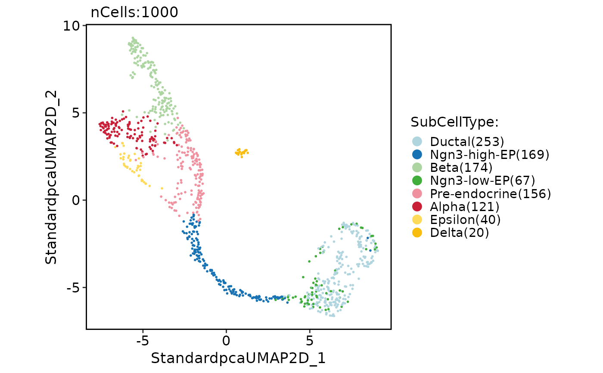
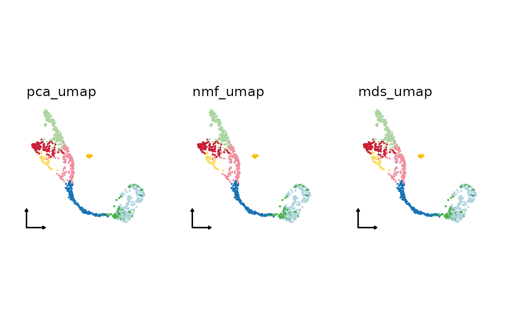
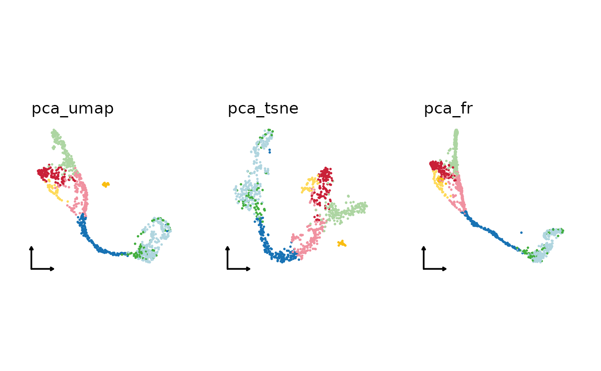
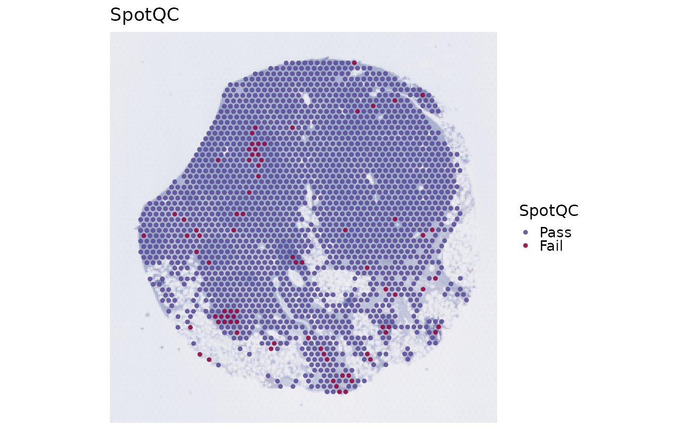
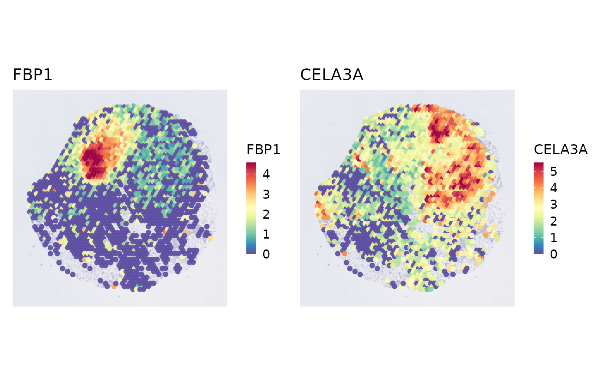
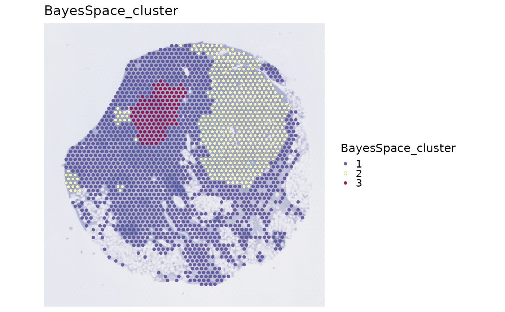

Normalize, find variable features, scale, reduce dimensions, and cluster a
Seurat object. workflow = "spatial" adds spot QC, spatial variable
features, optional BayesSpace clustering, and optional deconvolution. It is
not a multi-slice integration orchestrator.
Objects that also contain a ChromatinAssay are preprocessed sequentially
(default assay, then chromatin).
Usage
RunStandardWorkflow(
srt,
prefix = "Standard",
workflow = c("single_cell", "spatial"),
assay = NULL,
image = NULL,
coord.cols = c("x", "y"),
do_spot_qc = TRUE,
spot_qc_params = list(),
do_spatial_variable_features = TRUE,
spatial_variable_features_params = list(),
do_spatial_cluster = FALSE,
spatial_cluster_method = "BayesSpace",
spatial_q = NULL,
bayesspace_params = list(),
reference = NULL,
reference_label = NULL,
reference_assay = NULL,
do_deconvolution = !is.null(reference),
deconvolution_method = "RCTD",
deconvolution_params = list(),
do_normalization = NULL,
normalization_method = "LogNormalize",
do_HVF_finding = TRUE,
HVF_method = "vst",
nHVF = 2000,
HVF = NULL,
do_scaling = TRUE,
vars_to_regress = NULL,
regression_model = "linear",
linear_reduction = "pca",
linear_reduction_dims = 50,
linear_reduction_dims_use = NULL,
linear_reduction_params = list(),
force_linear_reduction = FALSE,
nonlinear_reduction = "umap",
nonlinear_reduction_dims = 2,
nonlinear_reduction_params = list(),
force_nonlinear_reduction = TRUE,
neighbor_metric = "euclidean",
neighbor_k = 20L,
cluster_algorithm = "louvain",
cluster_resolution = 0.6,
cores = 1L,
verbose = TRUE,
seed = 11,
...
)Arguments
- srt
A
Seuratobject.- prefix
Prefix for intermediate object names.
- workflow
"single_cell"or"spatial"(basic single-image Visium-style).- assay
Assay to use.
NULLuses the default assay.- image
Spatial image name. Required when multiple images are present; a single image is selected automatically when
NULL.- coord.cols
Metadata coordinate columns used when no image is available.
- do_spot_qc, spot_qc_params
Run
RunSpotQC()and extra arguments.- do_spatial_variable_features, spatial_variable_features_params
Run
RunSpatialVariableFeatures(). The workflow defaultsset_variable_features = FALSEso expression HVFs are kept.- do_spatial_cluster, spatial_cluster_method, spatial_q, bayesspace_params
Spatial clustering. Only
"BayesSpace"is supported.spatial_q = NULLuses the number of ordinary spot clusters.- reference, reference_label, reference_assay
Optional single-cell reference for deconvolution.
- do_deconvolution, deconvolution_method, deconvolution_params
Deconvolution (
"RCTD","SPOTlight", or"Cell2location").NULLruns whenreferenceor cell2location signatures are provided.- do_normalization, normalization_method
Normalize if the assay has no scaled data (
NULL). One of"LogNormalize","SCT","TFIDF","scran"."SCT"switches downstream steps to the"SCT"assay.- do_HVF_finding, HVF_method, nHVF, HVF
Highly variable features.
HVF_methodis"vst","mvp","disp", or"scran".- do_scaling
Force scaling via ScaleData.
- vars_to_regress
Regressors used in scaling.
NULLuses none.- regression_model
"linear","poisson", or"negativebinomial".- linear_reduction, linear_reduction_dims, linear_reduction_dims_use, linear_reduction_params, force_linear_reduction
Linear reduction (
"pca","svd","ica","nmf","mds","glmpca").linear_reduction_dims_use = NULLuses estimated dimensions, else the first 50.- nonlinear_reduction, nonlinear_reduction_dims, nonlinear_reduction_params, force_nonlinear_reduction
Nonlinear reduction (
"umap","umap-naive","tsne","dm","phate","pacmap","trimap","largevis","fr").- neighbor_metric, neighbor_k
Neighbor graph (
"euclidean","cosine","manhattan","hamming").- cluster_algorithm, cluster_resolution
Clustering (
"louvain","slm","leiden"). Largercluster_resolutionyields fewer clusters.- cores
Number of CPU cores.
- verbose
Whether to print the message. Default is
TRUE.- seed
Random seed.
- ...
Additional arguments passed to reduction methods.
Value
A Seurat object. Spatial workflows store per-stage state in
srt@tools[["run_standard_spatial_workflow"]], including the effective
set_variable_features value. A failed stage signals an error with the same
table in attribute standard_spatial_stages.
Examples
library(Matrix)
data(pancreas_sub)
pancreas_sub <- RunStandardWorkflow(pancreas_sub)
#> ℹ [2026-08-30 22:34:11] Start standard processing workflow...
#> ℹ [2026-08-30 22:34:11] Checking a list of <Seurat>...
#> ! [2026-08-30 22:34:12] Data 1/1 of the `srt_list` is "unknown"
#> Warning: Data 1/1 of the `srt_list` is "unknown"
#> ℹ [2026-08-30 22:34:12] Perform `NormalizeData()` with `normalization.method = 'LogNormalize'` on 1/1 of `srt_list`...
#> ℹ [2026-08-30 22:34:12] Perform `FindVariableFeatures()` on 1/1 of `srt_list`...
#> ℹ [2026-08-30 22:34:12] Use the separate HVF from `srt_list`
#> ℹ [2026-08-30 22:34:12] Number of available HVF: 2000
#> ℹ [2026-08-30 22:34:12] Finished check
#> ℹ [2026-08-30 22:34:12] Perform `ScaleData()`
#> ℹ [2026-08-30 22:34:12] Perform pca linear dimension reduction
#> ℹ [2026-08-30 22:34:13] Use stored estimated dimensions 1:23 for Standardpca
#> ℹ [2026-08-30 22:34:13] Perform `Seurat::FindClusters()` with `cluster_algorithm = 'louvain'` and `cluster_resolution = 0.6`
#> ℹ [2026-08-30 22:34:13] Reorder clusters...
#> ℹ [2026-08-30 22:34:13] Skip `log1p()` because `layer = data` is not "counts"
#> ℹ [2026-08-30 22:34:13] Perform umap nonlinear dimension reduction
#> ✔ [2026-08-30 22:34:23] Standard processing workflow completed
CellDimPlot(
pancreas_sub,
group.by = "SubCellType"
)

# Use a combination of different linear
# or nonlinear dimension reduction methods
linear_reductions <- c(
"pca", "nmf", "mds"
)
pancreas_sub <- RunStandardWorkflow(
pancreas_sub,
linear_reduction = linear_reductions,
nonlinear_reduction = "umap"
)
#> ℹ [2026-08-30 22:34:23] Start standard processing workflow...
#> ℹ [2026-08-30 22:34:23] Checking a list of <Seurat>...
#> ℹ [2026-08-30 22:34:24] Data 1/1 of the `srt_list` has been log-normalized
#> ℹ [2026-08-30 22:34:24] Perform `FindVariableFeatures()` on 1/1 of `srt_list`...
#> ℹ [2026-08-30 22:34:24] Use the separate HVF from `srt_list`
#> ℹ [2026-08-30 22:34:24] Number of available HVF: 2000
#> ℹ [2026-08-30 22:34:24] Finished check
#> ℹ [2026-08-30 22:34:24] Perform `ScaleData()`
#> ℹ [2026-08-30 22:34:24] Perform pca linear dimension reduction
#> ℹ [2026-08-30 22:34:24] Use stored estimated dimensions 1:23 for Standardpca
#> ℹ [2026-08-30 22:34:25] Perform `Seurat::FindClusters()` with `cluster_algorithm = 'louvain'` and `cluster_resolution = 0.6`
#> ℹ [2026-08-30 22:34:25] Reorder clusters...
#> ℹ [2026-08-30 22:34:25] Skip `log1p()` because `layer = data` is not "counts"
#> ℹ [2026-08-30 22:34:25] Perform umap nonlinear dimension reduction
#> Warning: Key ‘StandardpcaUMAP2D_’ taken, using ‘standardpcaumap2d_’ instead
#> ℹ [2026-08-30 22:34:34] Perform nmf linear dimension reduction
#> ℹ [2026-08-30 22:34:34] Running NMF...
#> ℹ StandardBE_ 1
#> ℹ Positive: Ccnd1, Spp1, Eno1, Rps2, Mdk, Ldha, Pebp1, Mif, Gapdh, Prdx1
#> ℹ Cd24a, Krt8, Dbi, Aldoa, Cldn10, Rplp1, Mgst1, Npm1, Ybx1, Tkt
#> ℹ Hspe1, Ptma, Rpl12, Clu, Wfdc2, Sox9, Vim, Rpl22l1, Krt18, Tmsb10
#> ℹ Negative: Tmem108, Poc1a, Epn3, Wipi1, Tmcc3, Fgf12, Tecpr2, Zbtb4, Plekho1, Slc25a10
#> ℹ Gm10941, Trf, Man1c1, Hmgcs1, Nipal1, Jam3, Pgap1, Alpl, Tnr, Kcnip3
#> ℹ Gm15915, Rbp2, Cbfa2t2, Sh2d4a, Megf6, Prkcb, Naaladl2, Fam46d, Hist2h2ac, Tox2
#> ℹ StandardBE_ 2
#> ℹ Positive: Spp1, Atp1b1, Id2, Vim, Sparc, Dbi, Rps2, Mgst1, Gsta3, Rpl22l1
#> ℹ Acot1, Anxa2, 1700011H14Rik, Sox9, Rplp1, Bicc1, Adamts1, Rps12, Nudt19, Cldn3
#> ℹ Pdzk1ip1, Ppp1r1b, Rpl36a, Rpl12, Ifitm2, Jun, Ptn, S100a10, Mdk, Mt1
#> ℹ Negative: Aacs, Tmem108, Poc1a, Epn3, B830012L14Rik, Tmcc3, Rfc1, Wsb1, Tecpr2, Zbtb4
#> ℹ Plekho1, Ppp2r2b, Haus8, Trf, Gm5420, Man1c1, Hmgcs1, Nipal1, Jam3, Tcerg1
#> ℹ Pgap1, Alpl, Larp1b, Tnr, Kcnip3, Lsm12, Ptbp3, Gm15915, Cntln, Rbp2
#> ℹ StandardBE_ 3
#> ℹ Positive: Clu, Mt1, Spp1, Krt18, Mt2, Muc1, Gsta3, Cldn3, Mgst1, Sparc
#> ℹ Ttr, Serpinh1, Aldoa, Tpi1, H19, Dbi, Epcam, Mif, Pdzk1ip1, Gapdh
#> ℹ Prdx1, Cat, Ambp, Ldha, Ifitm2, Krt8, Csrp2, Anxa2, Rps2, Tmsb10
#> ℹ Negative: Rpa3, Aacs, Tmem108, Poc1a, Nop56, Wipi1, Tmcc3, Trib1, Rrp15, Fgfrl1
#> ℹ Nhsl1, Fgf12, Lama1, Slc20a1, Tecpr2, Zbtb4, Plekho1, Ppp2r2b, Haus8, Gm10941
#> ℹ Trf, Gm5420, Man1c1, Hmgcs1, Nipal1, Jam3, Tcerg1, Snrpa1, Alpl, Larp1b
#> ℹ StandardBE_ 4
#> ℹ Positive: Cck, Tmsb4x, Mdk, Gadd45a, Selm, Ppp1r14a, Sox4, Btbd17, Cotl1, Ppp3ca
#> ℹ Sh3bgrl3, Jun, Ifitm2, Rps2, Tubb3, Rplp1, Igfbpl1, Ptma, Calr, Sult2b1
#> ℹ Hn1, Lrpap1, Rps12, Smarcd2, Nkx6-1, Rpl36a, Neurog3, Neurod2, Gnas, Rpl12
#> ℹ Negative: Elovl6, Tmem108, Poc1a, Epn3, Nop56, Wipi1, B830012L14Rik, Atic, Rrp15, Rfc1
#> ℹ Fgf12, Lama1, Slc20a1, Tecpr2, Ppp2r2b, Eif1ax, Slc25a10, Fam162a, P4ha3, Gm10941
#> ℹ Tenm4, Pde4b, Gm5420, Man1c1, Hmgcs1, Pgap1, Mgst2, Larp1b, Tnr, Kcnip3
#> ℹ StandardBE_ 5
#> ℹ Positive: Spp1, Tmsb4x, Cyr61, Krt18, Tpm1, Krt8, Myl12a, Anxa5, Csrp1, Tnfrsf12a
#> ℹ Vim, Krt19, Jun, Anxa2, Tagln2, Nudt19, Sparc, Cldn7, Tmsb10, Clu
#> ℹ Myl12b, S100a10, Cd24a, Rps2, Myl9, Klf6, Cldn3, Lurap1l, Dbi, Rplp1
#> ℹ Negative: Elovl6, Aacs, Tmem108, Poc1a, Tmcc3, Rfc1, Nhsl1, Fgf12, Lama1, Slc20a1
#> ℹ Tecpr2, Plekho1, Ppp2r2b, Slc25a10, Fam162a, Gm10941, Tenm4, Man1c1, Nipal1, Jam3
#> ℹ Pgap1, Alpl, Tnr, Kcnip3, Ptbp3, Gm15915, Cntln, Ocln, Blvrb, Fras1
#> ✔ [2026-08-30 22:34:53] NMF compute completed
#> ℹ [2026-08-30 22:34:53] Use stored estimated dimensions 1:50 for Standardnmf
#> ℹ [2026-08-30 22:34:54] Perform `Seurat::FindClusters()` with `cluster_algorithm = 'louvain'` and `cluster_resolution = 0.6`
#> ℹ [2026-08-30 22:34:54] Reorder clusters...
#> ℹ [2026-08-30 22:34:54] Skip `log1p()` because `layer = data` is not "counts"
#> ℹ [2026-08-30 22:34:54] Perform umap nonlinear dimension reduction
#> ℹ [2026-08-30 22:35:04] Perform mds linear dimension reduction
#> Error in RunDimsEstimate(srt = srt, reduction = paste0(prefix, linear_reduction), reduction_method = linear_reduction, use_stored = FALSE, verbose = FALSE): No valid dimensions can be estimated for Standardmds
plist1 <- lapply(
linear_reductions, function(lr) {
CellDimPlot(
pancreas_sub,
group.by = "SubCellType",
reduction = paste0(
"Standard", lr, "UMAP2D"
),
xlab = "", ylab = "",
title = paste0(lr, "_umap"),
legend.position = "none",
theme_use = "theme_blank"
)
}
)
patchwork::wrap_plots(plist1)

nonlinear_reductions <- c(
"umap", "tsne", "fr"
)
pancreas_sub <- RunStandardWorkflow(
pancreas_sub,
linear_reduction = "pca",
nonlinear_reduction = nonlinear_reductions
)
#> ℹ [2026-08-30 22:35:05] Start standard processing workflow...
#> ℹ [2026-08-30 22:35:05] Checking a list of <Seurat>...
#> ℹ [2026-08-30 22:35:05] Data 1/1 of the `srt_list` has been log-normalized
#> ℹ [2026-08-30 22:35:05] Perform `FindVariableFeatures()` on 1/1 of `srt_list`...
#> ℹ [2026-08-30 22:35:06] Use the separate HVF from `srt_list`
#> ℹ [2026-08-30 22:35:06] Number of available HVF: 2000
#> ℹ [2026-08-30 22:35:06] Finished check
#> ℹ [2026-08-30 22:35:06] Perform `ScaleData()`
#> ℹ [2026-08-30 22:35:06] Perform pca linear dimension reduction
#> ℹ [2026-08-30 22:35:06] Use stored estimated dimensions 1:23 for Standardpca
#> ℹ [2026-08-30 22:35:07] Perform `Seurat::FindClusters()` with `cluster_algorithm = 'louvain'` and `cluster_resolution = 0.6`
#> ℹ [2026-08-30 22:35:07] Reorder clusters...
#> ℹ [2026-08-30 22:35:07] Skip `log1p()` because `layer = data` is not "counts"
#> ℹ [2026-08-30 22:35:07] Perform umap nonlinear dimension reduction
#> Warning: Key ‘StandardpcaUMAP2D_’ taken, using ‘standardpcaumap2d_’ instead
#> ℹ [2026-08-30 22:35:16] Perform tsne nonlinear dimension reduction
#> ℹ [2026-08-30 22:35:16] Perform tsne nonlinear dimension reduction using Standardpca (1:23)
#> ℹ [2026-08-30 22:35:18] Perform fr nonlinear dimension reduction
#> ℹ [2026-08-30 22:35:18] Perform fr nonlinear dimension reduction using Standardpca_SNN
#> ✔ [2026-08-30 22:35:19] Standard processing workflow completed
plist2 <- lapply(
nonlinear_reductions, function(nr) {
CellDimPlot(
pancreas_sub,
group.by = "SubCellType",
reduction = paste0(
"Standardpca", nr, "2D"
),
xlab = "", ylab = "",
title = paste0("pca_", nr),
legend.position = "none",
theme_use = "theme_blank"
)
}
)
patchwork::wrap_plots(plist2)

data(visium_human_pancreas_sub)
spatial <- RunStandardWorkflow(
visium_human_pancreas_sub,
workflow = "spatial",
assay = "Spatial",
do_spatial_cluster = FALSE,
spatial_cluster_method = "BayesSpace",
do_deconvolution = FALSE,
deconvolution_method = "RCTD",
linear_reduction_dims = 10,
linear_reduction_dims_use = 1:5,
nonlinear_reduction_dims = 2,
spatial_variable_features_params = list(nfeatures = 50)
)
#> ℹ [2026-08-30 22:35:20] Start standard spot-level spatial workflow...
#> ◌ [2026-08-30 22:35:20] Running spot-level quality control
#> ✔ [2026-08-30 22:35:20] 1907 spots passed QC and 79 spots failed QC
#> ℹ [2026-08-30 22:35:20] Start standard processing workflow...
#> ℹ [2026-08-30 22:35:20] Checking a list of <Seurat>...
#> ! [2026-08-30 22:35:20] Data 1/1 of the `srt_list` is "unknown"
#> Warning: Data 1/1 of the `srt_list` is "unknown"
#> ℹ [2026-08-30 22:35:20] Perform `NormalizeData()` with `normalization.method = 'LogNormalize'` on 1/1 of `srt_list`...
#> ℹ [2026-08-30 22:35:20] Perform `FindVariableFeatures()` on 1/1 of `srt_list`...
#> ℹ [2026-08-30 22:35:21] Use the separate HVF from `srt_list`
#> ℹ [2026-08-30 22:35:21] Number of available HVF: 2000
#> ℹ [2026-08-30 22:35:21] Finished check
#> ℹ [2026-08-30 22:35:21] Perform `ScaleData()`
#> ℹ [2026-08-30 22:35:21] Perform pca linear dimension reduction
#> ℹ [2026-08-30 22:35:22] Perform `Seurat::FindClusters()` with `cluster_algorithm = 'louvain'` and `cluster_resolution = 0.6`
#> ℹ [2026-08-30 22:35:22] Reorder clusters...
#> ℹ [2026-08-30 22:35:22] Skip `log1p()` because `layer = data` is not "counts"
#> ℹ [2026-08-30 22:35:22] Perform umap nonlinear dimension reduction
#> ✔ [2026-08-30 22:35:33] Standard processing workflow completed
#> ◌ [2026-08-30 22:35:33] Running spatial variable feature detection
#> ✔ [2026-08-30 22:35:34] Stored 50 spatial variable features
#> ✔ [2026-08-30 22:35:34] Standard spot-level spatial workflow completed
SpatialSpotPlot(spatial, group.by = "SpotQC")

SpatialSpotPlot(
spatial,
features = spatial@tools[["SpatialVariableFeatures"]]$summary$top_features[1:2]
)

spatial_bayes <- RunStandardWorkflow(
visium_human_pancreas_sub,
workflow = "spatial",
assay = "Spatial",
do_spatial_cluster = TRUE,
spatial_cluster_method = "BayesSpace",
spatial_q = 3,
do_deconvolution = FALSE,
deconvolution_method = "RCTD",
bayesspace_params = list(
n.PCs = 5,
n.HVGs = 200,
store_sce = FALSE,
spatial_cluster_params = list(
nrep = 200,
burn.in = 50,
thin = 10,
save.chain = FALSE
)
)
)
#> ℹ [2026-08-30 22:35:34] Start standard spot-level spatial workflow...
#> ◌ [2026-08-30 22:35:34] Running spot-level quality control
#> ✔ [2026-08-30 22:35:35] 1907 spots passed QC and 79 spots failed QC
#> ℹ [2026-08-30 22:35:35] Start standard processing workflow...
#> ℹ [2026-08-30 22:35:35] Checking a list of <Seurat>...
#> ! [2026-08-30 22:35:35] Data 1/1 of the `srt_list` is "unknown"
#> Warning: Data 1/1 of the `srt_list` is "unknown"
#> ℹ [2026-08-30 22:35:35] Perform `NormalizeData()` with `normalization.method = 'LogNormalize'` on 1/1 of `srt_list`...
#> ℹ [2026-08-30 22:35:35] Perform `FindVariableFeatures()` on 1/1 of `srt_list`...
#> ℹ [2026-08-30 22:35:35] Use the separate HVF from `srt_list`
#> ℹ [2026-08-30 22:35:35] Number of available HVF: 2000
#> ℹ [2026-08-30 22:35:35] Finished check
#> ℹ [2026-08-30 22:35:35] Perform `ScaleData()`
#> ℹ [2026-08-30 22:35:35] Perform pca linear dimension reduction
#> ℹ [2026-08-30 22:35:36] Use stored estimated dimensions 1:30 for Standardpca
#> ℹ [2026-08-30 22:35:37] Perform `Seurat::FindClusters()` with `cluster_algorithm = 'louvain'` and `cluster_resolution = 0.6`
#> ℹ [2026-08-30 22:35:37] Reorder clusters...
#> ℹ [2026-08-30 22:35:37] Skip `log1p()` because `layer = data` is not "counts"
#> ℹ [2026-08-30 22:35:37] Perform umap nonlinear dimension reduction
#> ✔ [2026-08-30 22:35:48] Standard processing workflow completed
#> ◌ [2026-08-30 22:35:48] Running spatial variable feature detection
#> ✔ [2026-08-30 22:35:49] Stored 2000 spatial variable features
#> ℹ [2026-08-30 22:35:49] Convert <Seurat> to <SingleCellExperiment> for BayesSpace
#> ℹ [2026-08-30 22:35:49] Run BayesSpace spatial clustering with `q = 3`
#> Neighbors were identified for 1962 out of 1986 spots.
#> Fitting model...
#> Calculating labels using iterations 51 through 200.
#> ℹ [2026-08-30 22:35:55] BayesSpace clusters stored in metadata column "BayesSpace_cluster"
#> ✔ [2026-08-30 22:35:55] Standard spot-level spatial workflow completed
SpatialSpotPlot(spatial_bayes, group.by = "BayesSpace_cluster")
